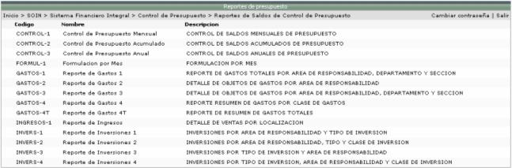
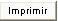
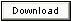
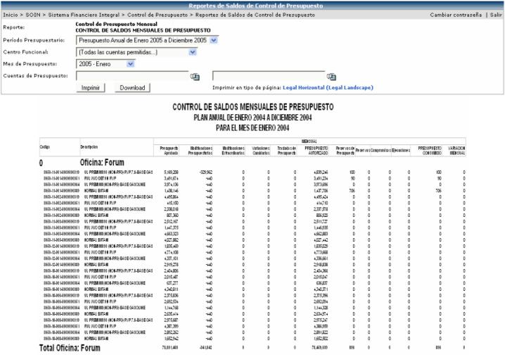

La siguiente pantalla muestra la lista de los posibles reportes, en donde se puede consultar los saldos del control de presupuesto:

La pantalla de filtros y la información del reporte varían dependiendo del reporte seleccionado en la lista anterior. El mismo se puede generar en HTML, presionando el botón

o en Excel presionando el botón
. El sistema le sugiere al usuario la orientación y tamaño de la hoja, para cuando desee imprimir el reporte, sepa en que tipo de hoja y en que orientación debe de imprimirlo.
